BJT DC Analysis
IC versus VCE
图像从左到右分别为：Saturation, Active, Breakdown
绘制负载线,,：
- 在 IC 轴上找到点 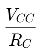
- 在 VCE 轴上找到点 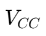
- 将两点相连
负载线与图像的交点即晶体管的静态工作点,,。
四种 DC Biasing Configuration
Base Biasing

使用一个电阻 RB 连接在基极和电源 VCC 之间，基极电流由 RB 控制。
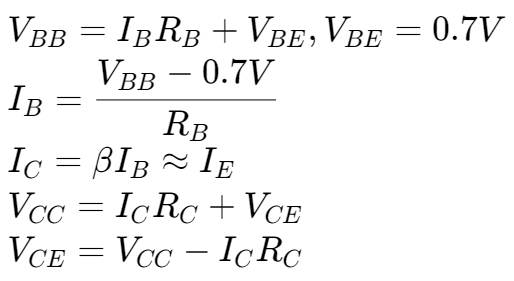
Collect Feedback Biasing


集电极通过一个反馈电阻 RC 连接到基极
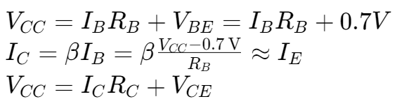
Emitter Biasing

在发射极引入一个电阻 RE 和额外的电压降，利用负反馈稳定工作点。
Voltage Divider Biasing

基极通过分压电阻网络 R1 和 R2 偏置，提供稳定的基极电压。
BJT AC Analysis

- 使用等效电路代替电路中的 BJT
- 将 DC 源看作接地
- 将 电容看作导线
共发射极放大器,,

计算基极电压 VB
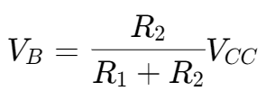
计算发射极电流 IE
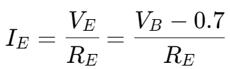
发射极电阻 re
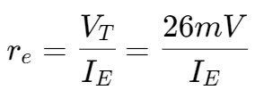
计算发射极电阻 r,,e,,
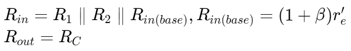
输入输出阻抗计算
BJT Power Amplifiers
Class A: Emitter Follower


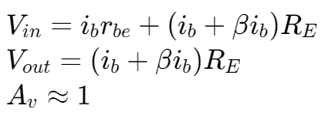
增益计算

计算 R1 和 R2
在中点偏置下，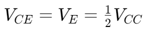
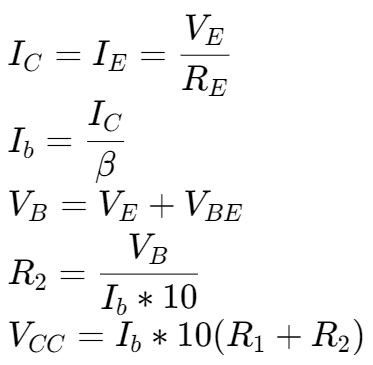
计算 Power dissipated
对于电阻：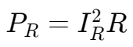
对于三极管：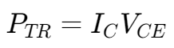
例题 1
Class B